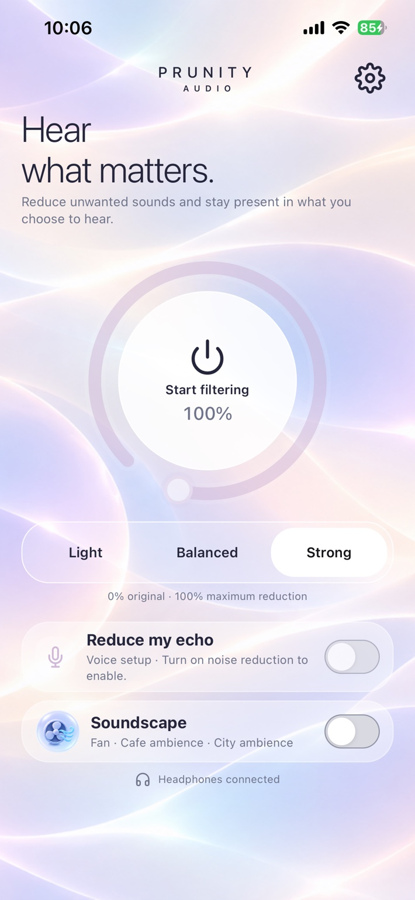
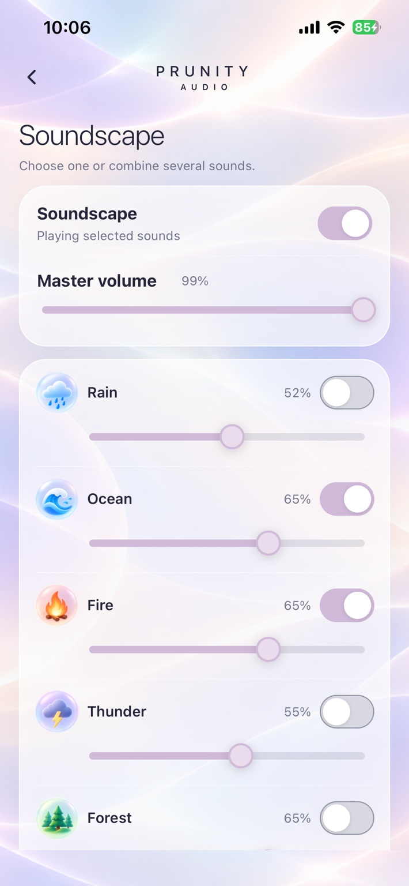
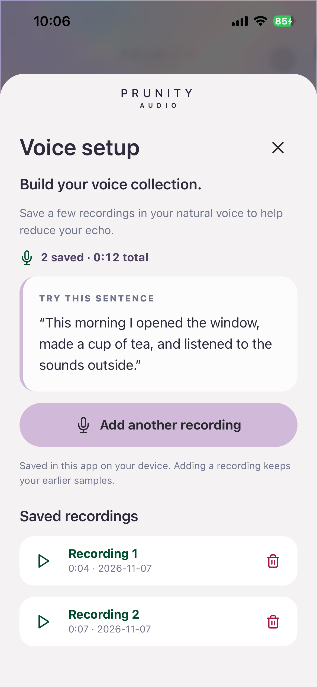

87%
Early tester feedback
of early demo participants reported they could stay longer in a conversation with Prunity.
Early MVP feedback; not a clinical outcome or a guarantee of individual results.A MORE COMFORTABLE WAY TO LISTEN
Reduce unwanted sounds, stay present, and hear what matters.
Early-access iPhone app · Your feedback helps us improve

HOW IT WORKS
Turn on noise reduction and adjust its strength to suit your surroundings.
Explore soundscapes and save voice samples for personalized listening features in development.
Keep conversations and the sounds you care about in focus.
INSIDE PRUNITY
Choose rain, ocean, fire and more. Combine soundscapes or adjust your listening with a simple touch.
Try Prunity

OUR MISSION
Prunity Audio is being developed by Prunity Inc. to support people with misophonia and sound sensitivity.
Founded by Farnaz Jazaeri, a PhD candidate in Computer Science at the University of Ottawa, the project combines audio research with feedback from the community.
Prunity is an early-stage listening product, not a medical treatment or diagnostic device.
Discover Prunity on iPhone and help shape what comes next.
Download on theApp StoreApp Store link not configured yet. Tap to request iOS access by email.